This exam covers three topics: Motion and Forces, Genetics and Evolution and Origins of the Universe. Section A is multiple choice and Section B is short answer.
Section A: Multiple choice (20 marks)
Motion and Forces
The speed limit in a school zone is 40 km/h. What is this in m/s?
40 ÷ 3.6 = 11.1 m/s.
Matt is on the state athletics team. Recently, he ran a race in a personal best time of 27.58 seconds at an average speed of 7.25 m/s. What was the distance of the race?
d = v × t = 7.25 × 27.58 = 200 m.
A car accelerates from 6.0 m/s to 24 m/s in 6.0 seconds. Its acceleration is:
a = (24 − 6.0) ÷ 6.0 = 3.0 m/s2.
The next two questions refer to the following information.
Consider the ticker tape below, with three sections labelled A, B and C. The ticker timer has a period of 0.020 s.
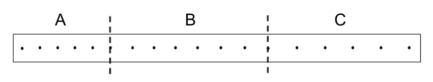
Which section shows the fastest speed?
The dots are furthest apart in section C, so the tape moved furthest in each 0.020 s.
If the length of section B is 6.4 cm, the speed of the object in that section is:
Section B has 7 gaps between dots: t = 7 × 0.020 = 0.14 s. v = 6.4 ÷ 0.14 = 45.7 cm/s.
What is the name of the force that slows down a car as it moves along a road?
James is playing tennis. He throws the ball up as he serves. Consider the ball while it is moving upwards, before he hits it. Which of the following is the best description of the net force on the ball?
Once the ball has left his hand, gravity (and air resistance) act downwards, so the ball slows as it rises.
Dr Khor has learnt to fly a drone on his holidays. It can accelerate at a maximum rate of 3.0 m/s2. If he attaches a package with the same mass as the drone, the maximum acceleration of his drone will now be:
Doubling the mass with the same maximum force halves the acceleration (a = F / m).
Genetics and Evolution
Cats have 38 chromosomes in regular hair cells. Which of the following is closest to the diploid number for cats?
Body (somatic) cells are diploid, so the diploid number is 38.
Cell division by mitosis results in two cells that have:
Base pairs are linked within a DNA molecule according to a regular pattern. Which of the following describes the pattern?
How many phenotypes can occur in the human ABO blood group, with alleles IA, IB and i?
A, B, AB and O.
What will be the result if Bb mates with bb?
Which of the following phrases best describes the process of evolution?
What do homologous structures in different species suggest about their evolutionary history?
Origins of the Universe
Which of the following defines a year?
Which one of the following does not apply to a constellation?
What is the Local Group?
Which of the following lists is in increasing order of size?
The Andromeda galaxy is moving towards the Milky Way. The light from the Andromeda galaxy would be:
Section B: Short answer
Question 1 (7 marks)
A physics teacher builds a giant slingshot to demonstrate motion to his students. Using a basketball as the projectile, he pulls the sling back, then releases it. The basketball flies forward until it hits the fence and gets jammed. A graph of the motion is shown below.
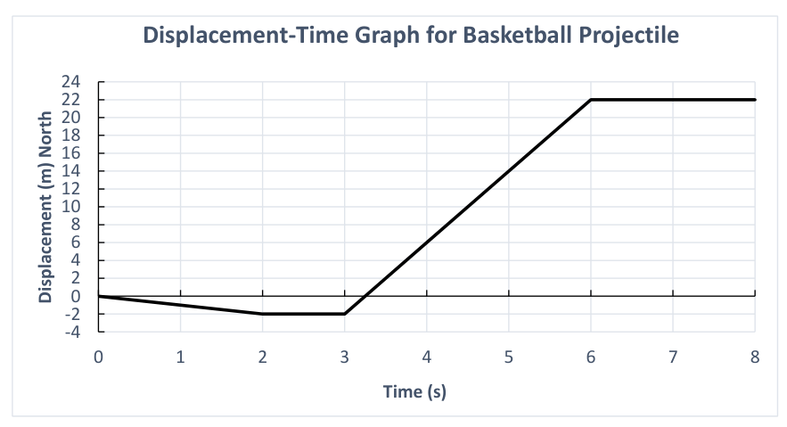
During which time interval(s) was the basketball stationary? Select all correct answers.
During which time interval(s) was the basketball travelling north? Select all correct answers.
Calculate the velocity of the basketball during the first two seconds.
Velocity: m/s, direction:
v = Δx / Δt = −2 ÷ 2 (1 mark) = −1.0 m/s, i.e. 1.0 m/s (1 mark) south (1 mark).
What was the magnitude of the final displacement of the basketball?
Read from the graph: 22 m.
Calculate the total distance travelled by the basketball from 0 to 8 seconds.
2 m south, then 24 m north (from −2 m to 22 m): 2 + 24 = 26 m.
Question 2 (2 marks)
Frank is swimming in the swimming pool. He completes a perfect somersault (flip) turn and pushes off the wall with his feet.
Imagine a simple diagram of the swimmer touching the wall. Describe the action–reaction pair of forces between the swimmer and the wall, labelling the forces in the format Fon A by B.
- Two arrows of equal length in opposite directions (1 mark).
- Correct labels (1 mark): Fon wall by swimmer (pointing into the wall) and Fon swimmer by wall (pointing away from the wall).
Question 3 (3 marks)
A car travelling at 50 km/h north turns a corner and continues travelling at 50 km/h, but now towards the west.
Has the car accelerated during this turn?
Explain your answer to part a.
The car has changed direction, so its velocity has changed (1 mark). If velocity changes with time, an acceleration has occurred (1 mark).
Question 4 (2 marks)
The position–time graphs below show the motion of five different objects.
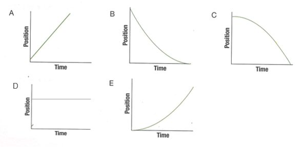
Which graph(s) show an object moving with constant velocity? Select all that apply.
A has a constant gradient; D is stationary, which is a constant velocity of zero.
Which graph(s) show an object speeding up?
Which graph(s) show an object slowing down?
Which graph(s) show an object travelling backwards?
Question 5 (8 marks)
The diagram below shows the flight of a model rocket. Terminal velocity means moving at a constant speed.
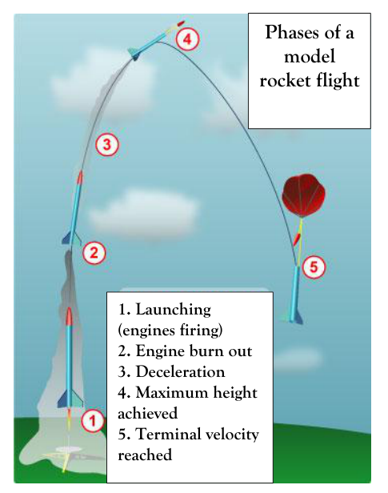
In which phase or phases of the model rocket's flight (write the numbers, separated by commas)
- are there no net forces acting on the rocket?
ii. is a thrust force being applied?
iii. is a weight force acting on the rocket?
iv. is the rocket's speed constant?
The model rocket has a mass of 200 g. What is the weight of the rocket on Earth?
W = mg = 0.200 × 9.8 (1 mark) = 1.96 N (1 mark).
Explain why the rocket falls at terminal velocity during phase 5 of its flight on Earth.
The atmosphere on Earth creates air resistance that is equal and opposite to the weight (1 mark). The forces are balanced, which gives a constant velocity (1 mark).
This same rocket is launched on planet Omega. Gravity on planet Omega is the same as on Earth. The only difference is that there is no atmosphere on planet Omega.
State why the rocket won't reach terminal velocity during phase 5 on planet Omega.
There is no air, so there is no air resistance.
Describe the rocket's motion during phase 5 of its flight on planet Omega.
It keeps accelerating downwards.
Question 6 (6 marks)
Part of a DNA molecule is shown below.
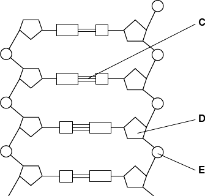
In the DNA molecule this segment came from, 35% of the bases were thymine. Complete the table to show the names and percentages of the other bases.
| Name of base | Percentage |
|---|---|
| Thymine | 35 |
| Adenine | |
A pairs with T, so A = 35%. That leaves 100 − 70 = 30% for C and G, which pair with each other: 15% each.
Name the parts of the diagram labelled C, D and E.
Label C:
Label D:
Label E:
Question 7 (4 marks)
The diagram below shows two patterns of cell reproduction.
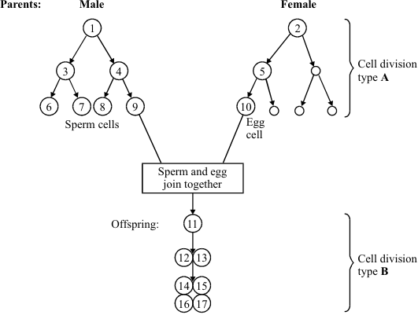
Name the two types of cell reproduction, A and B, shown in the diagram.
Type A:
Type B:
The offspring shown in the diagram is a boy. Which sex chromosome would be found in each of these cells?
Cell 9 (the sperm):
Cell 10 (the egg):
Eggs always carry an X. For the offspring to be a boy (XY), the sperm must have carried a Y.
Question 8 (5 marks)
CADASIL is an inherited disorder caused by an autosomal dominant allele that affects blood vessels in the brain. The diagram shows the inheritance of CADASIL in one family.
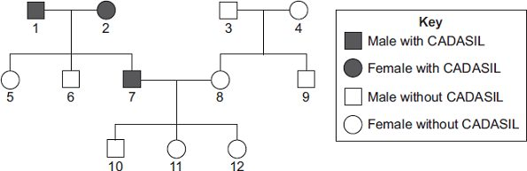
What is a dominant allele?
An allele that is always expressed, OR an allele where only one copy is needed for it to be expressed.
What evidence in the diagram confirms the condition is dominant?
Two affected parents (1 and 2) have unaffected children (5 and 6).
Person 7 and person 8 are planning to have another baby. What is the percentage chance that their next child will have CADASIL? Work it out with a Punnett square.
The father (7) is heterozygous, Cc, as he already has unaffected children. The mother (8) is homozygous recessive, cc. Cc × cc gives Cc : cc = 1 : 1, so the chance is 50%. (1 mark for working.)
A Year 10 science student, Walter, says that since person 7 and person 8 have already had 3 unaffected children, the chance of their next child having CADASIL is very low. What mistake has Walter made in his reasoning?
Previous offspring don't affect future offspring: each child has the same 50% chance.
Question 9 (3 marks)
The image below shows the changes in a population of wild mice over time after hawk predators were introduced to their environment. The white and dark mice differ in colour only.
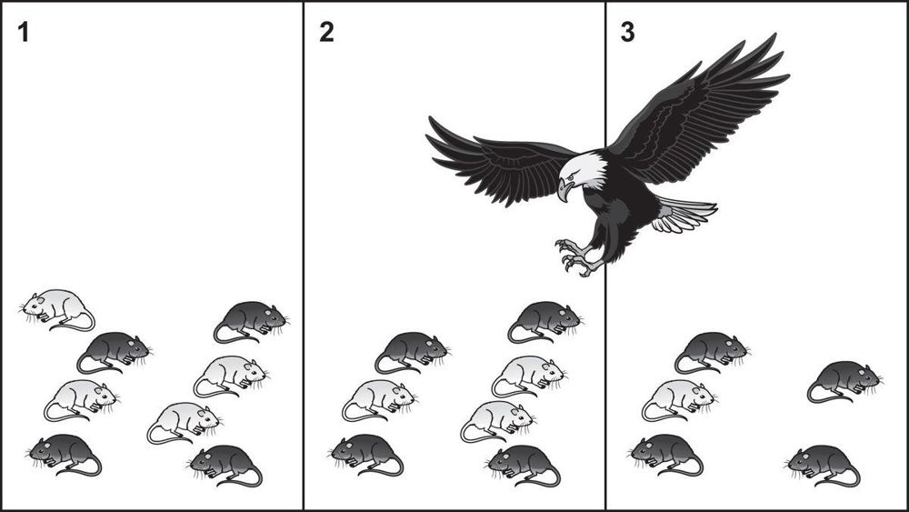
Images 1 to 3 show snapshots of the mice at different times, with 3 the most recent. Describe the change in the population of mice over time.
Dark mice become more common in the population over time.
What is the name of the overall process shown in the image?
What inference can you make about the colour of the environment the mice live in? It is .
Question 10 (2 marks)
Below is a diagram of the Solar System. Each major object or region has been labelled A–L.
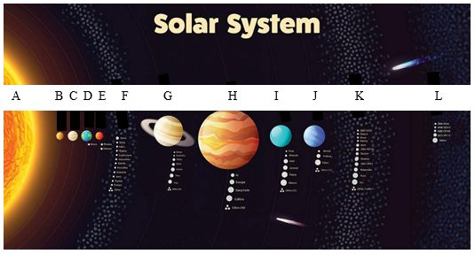
- Which letter represents the Kuiper Belt?
- Which two planets have been swapped on the diagram compared with their real positions? and
Question 11 (2 marks)
Describe the geocentric model of the universe.
The universe has the Earth at the centre, and all objects orbit the Earth.
Describe how the geocentric model differs from the heliocentric model.
The heliocentric model has the Sun, instead of the Earth, at the centre.
Question 12 (3 marks)
In 1929, Edwin Hubble discovered that the spectra of light from distant galaxies showed they were moving away from the Earth. This was an important discovery which helped change our understanding of the universe.
A galaxy Hubble analysed was moving away from Earth at 1260 km/s. Calculate the distance to this galaxy and include the appropriate unit.
Distance:
v = H0 × d, so 1260 = 70 × d (1 mark), d = 1260 ÷ 70 = 18 (1 mark) Mpc (1 mark).
Question 13 (2 marks)
In 2006, the International Astronomical Union created an official definition of the term "planet". What are the 2 criteria of a planet that Pluto meets?
- It is in orbit around a star (the Sun).
- Its own gravity has pulled it into a spherical (or nearly spherical) shape.
Question 14 (3 marks)
The diagram shows absorption spectra from a very distant galaxy and a distant galaxy, compared to a laboratory reference. All are made of the same gases.
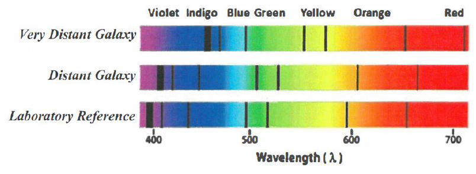
What do the spectra tell us about the relationship between distance and the amount of redshift observed?
The further the galaxy is from Earth, the greater the amount of redshift.
How does redshift support the idea of a Big Bang?
All distant galaxies have their light redshifted (1 mark), so the universe is expanding (1 mark).
OR: the universe must have been smaller and denser in the past.
Question 15 (6 marks)
The diagram below is a Hertzsprung–Russell diagram.
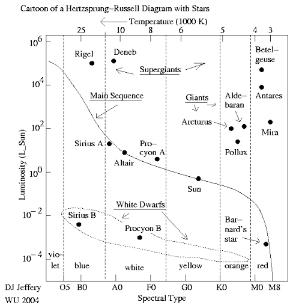
According to the HR diagram, which star is the brightest red star?
The star Regulus has the same luminosity as Arcturus, with a surface temperature of 12 500 K. Describe where Regulus would be on the HR diagram.
Level with Arcturus (about 100 times the Sun's luminosity), at 12 500 K, which is between the 10 000 K and 25 000 K marks: on (or very close to) the main sequence, up and to the left of Sirius A.
What does the HR diagram tell us about the relationship between luminosity and temperature for main sequence stars?
As temperature increases, luminosity increases (or the reverse).
Sirius B and Rigel are both hot, blue stars, but they have some differences. Outline two differences between the stars.
- Rigel is much brighter (more luminous) than Sirius B, as shown by the luminosity axis (1 mark).
- Rigel is a blue supergiant and Sirius B is a white dwarf, as shown by their positions on the HR diagram (1 mark).
Why is it possible for Sirius B to have a lower luminosity than the Sun, even though the Sun is much cooler than Sirius B?
Sirius B is much smaller than the Sun.
Question 16 (4 marks)
The parallax method has been used to find the distance to the star 52 tau Ceti.
52 tau Ceti has a parallax angle of 0.2739 arcseconds when measured from Earth. Calculate its distance in parsecs, to 3 decimal places.
d = 1 / p = 1 ÷ 0.2739 (1 mark) = 3.651 pc (1 mark).
Convert this distance to light-years, to 1 decimal place.
d = 3.651 × 3.26 = 11.9 light-years.
How long does it take for light emitted from 52 tau Ceti to reach Earth?
A light-year is the distance light travels in one year, so light takes 11.9 years.